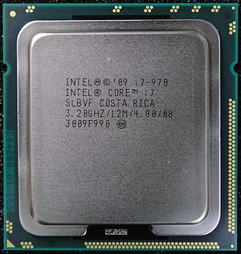
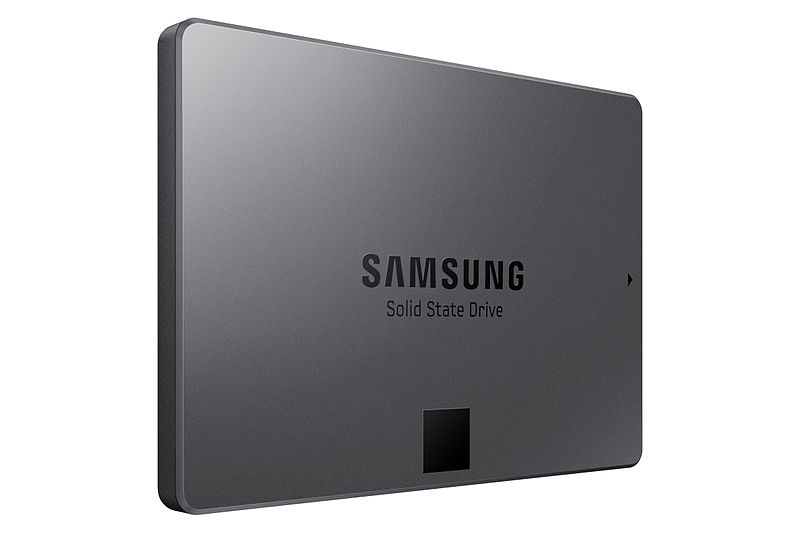
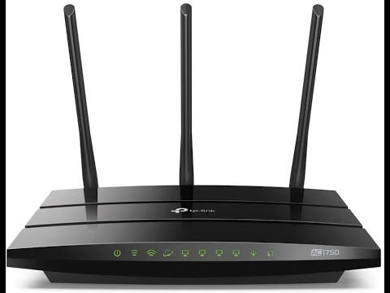
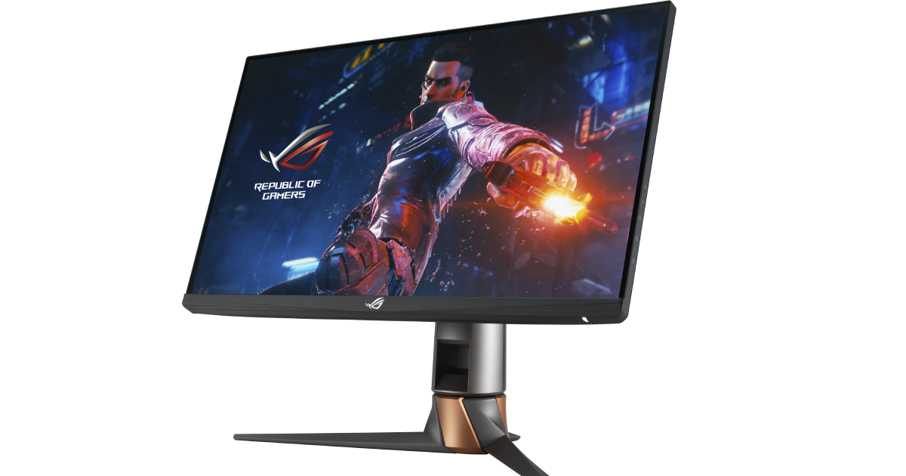

A CPU (angol: Central Processing Unit) központi feldolgozóegység) más néven processzor ill. mikroprocesszor, a számítógép „agya”, azon egysége, amely az utasítások értelmezését és végrehajtását vezérli, félvezetős kivitelezésű, összetett elektronikus áramkör. Magyarra többféleképpen fordítják, így pl. a központi végrehajtó egység, központi feldolgozó egység, központi feldolgozó processzor, vagy egyszerűen processzor kifejezések is elterjedtek. 
A tartós állapotú meghajtó (más néven félvezető alapú meghajtó vagy szilárdtestmeghajtó, angol rövidítése SSD (a Solid-state drive kifejezésből)) félvezetős memóriát használó adattároló eszköz. Bővebben, az SSD egy olyan, mozgó alkatrészek nélküli adattároló eszköz, ami memóriában tárolja az adatot, a környezetéhez, illetve a gazdaszámítógéphez a merevlemezekhez hasonlóan SATA vagy egyéb (SCSI, PCI Express, USB, stb.) csatlakozófelülettel csatlakozik és azokhoz hasonlóan blokkos adatelérést biztosít. Az SSD eszközökben a gyártók különböző típusú memóriákat használhatnak, mint pl. flash vagy különböző RAM fajták – ezt az ár- és a teljesítményigények határozzák meg. 
Az útválasztó, forgalomirányító vagy angol kifejezéssel: router[1] a számítógép-hálózatokban egy útválasztást végző eszköz, amelynek a feladata a különböző hálózatok – például egy otthoni vagy irodai hálózat és az internet, vagy egyes országok közötti hálózatok, vagy vállalaton belüli – összekapcsolása, az azok közötti adatforgalom irányítása. A számítógépes hálózatok működésének leírására több elméleti modell is létezik, az általánosan elterjedt OSI (Open Systems Interconnection) modell réteges struktúrájában a router a harmadik – hálózati – rétegben helyezkedik el. Útvonalválasztási döntéseinek alapját az ezen rétegbeli – általában IP- – címek adják. 
A monitor a számítógép megjelenítő perifériája. A monitort VGA, DVI, HDMI vagy DisplayPort monitorkábel köti össze a videóadapterrel, mely utasításai alapján jeleníti meg a kívánt képet. A számítógép folyamatosan küld jeleket a videoadapternek, hogy milyen karaktert, képet, vagy grafikát kell megjeleníteni. Az adapter átfordítja ezt olyan pixelekké, melyek segítségével a monitor meg tudja jeleníteni a képet. 